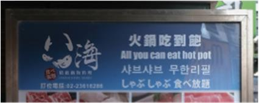
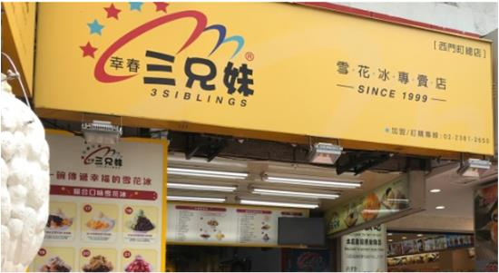

첫째날 일정
- (09:50) 타오위안 공항도착 예정 및 아침식사
- 위치 : 타오위안 공항 제2터미널 지하 푸드코트 (스타벅스, 맥도날드, 카렌, 춘수당)
- 가는 길 : 스카이 트레인 타고 제2터미널로 가야한다.
- 추천메뉴 : 우육면 NT$190, 쿵푸면 NT$85, 밀크티 NT$85, 새우고기 반반딤섬 NT$550 (22000원)
- 이동을 위해 이지카드 구매하기
- 지하철, 버스, 기차, 편의점, 드럭스토어(왓슨스), 스타벅스, 자전거대여 등
- 카드 구매 비는 환불 불가능 ! 단, 남은 잔액은 환불가능 !
- 카드 구매 비 NT$100 / 3900원 (공항, 편의점에서 구매가능)
- 혜택 : MRT 이용할 때 이지카드를 이용하면 20% 할인
- 버스와 MRT 환승하면 8% 할인
- 첫 충전금액 : NT$ 300 / 11500원
자세한 구매 및 이용법
- (12:00) 지안 산 호텔(建山大旅社) 도착 및 체크인 전 짐보관
- 위치 : 103台北市大同區歸綏街182號
No. 182, Gui Sui Street, Datong District , 타이베이, 103, Taiwan - 歸綏街182號, 大同區, (台北, 103)
- 솽리엔’ 역 (Shuanglian Station)에서 도보 15분
길찾기 from 공항
- (13:00) 시먼딩 구경 및 먹거리
점심-팔해훠궈/저녁-삼미식당

팔해훠궈 (八海精緻鍋物 西門店)
- 위치 : 108 대만 Taipei City, Wanhua District,
西寧南路72-1號6F(신주쿠 플라자)
- 2시간동안 무제한 훠궈뷔페
- 15:30까지 NT$535 + 10%vat= NT%595 / 23000원 (1人)
- 길찾기
아종면선 (阿宗麵線)
- 위치 : 108台北市萬華區峨眉街8-1號
- 곱창국수 NT$55 / 2100원
- 길찾기
삼미식당 (三味食堂)
- 위치 : 108台北市萬華區貴陽街二段116號
- 오후 5시 10분에 가게오픈
- 연어초밥 3pcs NT$190 / 7300원
- 길찾기

삼형매 빙수 (三兄妹雪花冰)
- 위치 : 108台北市萬華區漢中街23號
- 망고빙수 NT$170 / 7000원
- 길찾기
타이거슈가 (老虎堂西門西寧南店)
- 위치 :108台北市萬華區西寧南路50巷15-1號 (시먼점)
- 브라운 슈가 버블 밀크 NT$165 / 6300원
- 길찾기
85 Café (85度c台北西門店)
- 위치 : 108台北市萬華區漢中街151號
- 소금커피 NT$50 / 2000원
- 길찾기
- (18:00) 용산사
- 위치 : 10853台北市萬華區廣州街211號
- 운영 시간 : ~ 22:00
- 타이베이에서 가장 오래된 사원으로 1738년 청나라 시절 푸젠 성 이주민들에 의해 세워진 사찰로 중간에 소실되어 현재의 건물은 1957년에 다시 지은 것이다.
- 불교, 도교, 민간신앙까지 모시는 다종교 사원이다.
- 용산사는 오른쪽으로 들어가서 왼쪽으로 나가야한다. (반시계방향)
길찾기
★점괘 보는법
- 마음속으로 자신의 생년월일과 이름, 나이, 사는 곳을 말한다.
- 원하는 소원을 빈다.
- 쟈오베이(반달모양의 나무조각) 2개를 던진다.
- 쟈오베이가 서로 다른 모양이 연속으로 3번 나오면 점괘를 뽑을 수 있다.
- 점괘 번호를 확인하고 같은 번호의 서랍을 열어 점괘 확인! (해당 점괘에 맞는 부적을 옆에서 판매함)
- (18:00) 시먼 홍러우(西門紅樓)
- 위치 : 10853台北市萬華區廣州街211號
- 운영 시간 : ~ 21:30
- 1908년에 세워진 타이베이 최초의 극장이며 팔각극장이라 불리는 곳이다. 외부 광장에는 젊은 예술가들의 핸드메이드 제품을 판매하고 있으며 건물 안으로 들어가면 작은 공방들이 가득하다.
- 1층은 카페, 2층은 공연장을 재현해 놓음.
길찾기
- (~) 시먼딩 야시장 구경
구경후 원하면 삼미식당 포장
왕자치즈감자 (王子起司馬鈴薯)
- 위치 : 108台北市萬華區峨嵋街49-3號
- 버터통감자 NT$80 / 3100원
- 길찾기
핫스타 지파이(士林豪大大雞排)
- 위치 :108台北市萬華區漢中街34號
- 닭튀김 NT$80 / 3100원
- 길찾기
- (~) 편의점 추천 음식
숙소로 돌아가는 길에 사보자